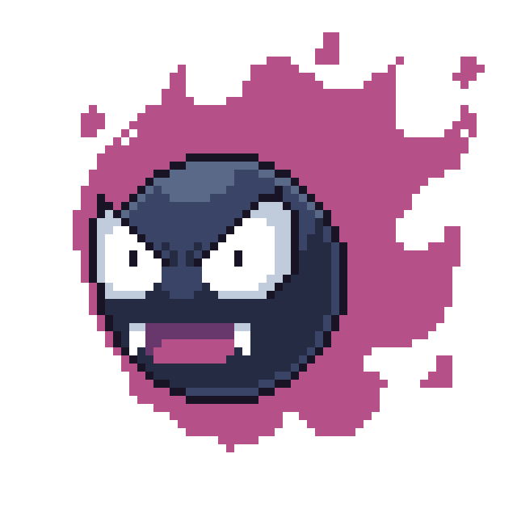
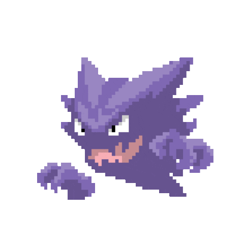

-
Bulbasaur #001

- Grama
- Veneno
Há uma semente de planta em suas costas desde o dia em que este Pokémon nasce. A semente cresce lentamente.
-
Ivysaur #002

- Grama
- Veneno
Uma flor maior desabrochou em seu dorso e perde a capacidade de caminhar em duas patas.
-
Venusaur #003

- Grama
- Veneno
As plantas em suas costas floresceram e ele se torna muito maior
-
Charmander #004

- Fogo
Um Pokémon do tipo fogo. A chama na ponta de sua cauda indica sua emoção.
-
Charmeleon #005

- Fogo
Evolução do Charmander. Sua cauda em chamas simboliza seu temperamento.
-
Charizard #006

- Fogo
- Voador
Forma final da linha evolutiva do Charmander. Pode lançar chamas que derretem rochas.
-
Squirtle #007

- Água
Um Pokémon do tipo água. Pode jorrar água com grande precisão.
-
Wartortle #008

- Água
Evolução do Squirtle. Desenvolveu uma cauda mais longa e peluda.
-
Blastoise #009

- Água
Forma final da linha evolutiva do Squirtle. Tem canhões de água nas costas.
-
Caterpie #010

- Inseto
Um Pokémon do tipo inseto. Seus pequenos olhos podem ver no escuro.
-
Metapod #011

- Inseto
Está esperando o momento de evoluir. Nesta fase, ele só pode endurecer, por isso permanece imóvel para evitar ataques.
-
butterfree #012

- Inseto
- Voador
Ele adora o néctar das flores e pode localizar manchas de flores que contenham até mesmo pequenas quantidades de pólen.
-
Gastly #013
- Fantasma
- Veneno
Ele envolve seu oponente em seu corpo gasoso, enfraquecendo lentamente sua presa ao envenená-la através da pele.
-
Haunter #014
- fantasma
- veneno
Ele gosta de se esconder no escuro e bater nos ombros com a mão gasosa. Seu toque causa estremecimentos sem fim.
-
gengar #015

- fantasma
- veneno
Para roubar a vida do seu alvo, ele se esconde na sombra da presa e espera silenciosamente por uma oportunidade.
-
mewtwo #016

- Pisícico
Seu DNA é quase igual ao de Mew. No entanto, seu tamanho e disposição são muito diferentes.